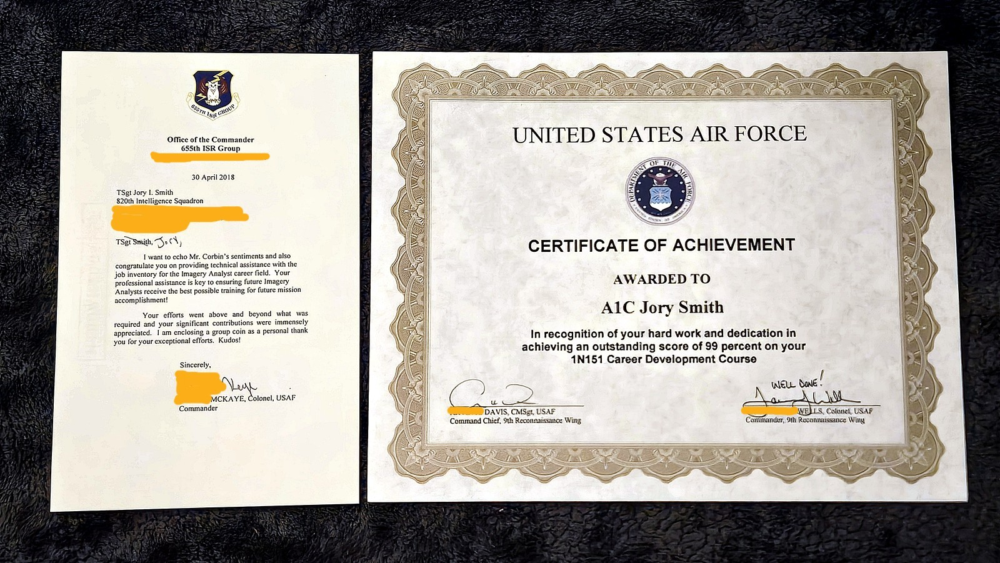
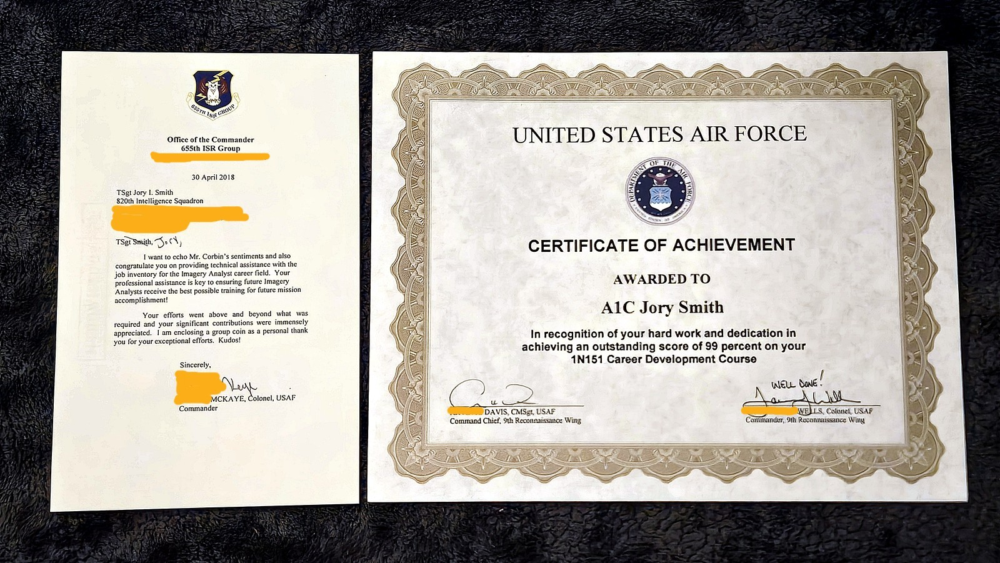

lbert
Problem Solving from First Principles
"If I had an hour to solve a problem, I'd spend 55 minutes thinking
about the problem, and 5 minutes thinking about solutions."
— Albert Einstein
Running away from problems is the greatest problem in the world.
Try running toward problems and facing fears.
The solutions are found within.
Getting Started
However, most things in life should be assumed to be false and therefore tested in the real world.
Mother Nature, people's actions, free markets, and your higher power are the ultimate judges of truth.
Even if these principles are true and helpful, they are still perfect ideals and nobody's perfect.
No mortal human being can claim perfect adherence to these principles.
Regardless, it's better to stumble forward in the right direction than stand still chasing perfection. You can always make improvements as you iterate.
Progress over perfection.
Click here for a video of this Overview.
-
Jump to a First Principle:
- Find the Light in the Darkness.
- Aim for the Highest Good.
- Seek the Truth.
- Write It All Down.
- Chip Away at Goals, Problems, and Solutions.
- Ask for Help.
- Collaborate over Bossing People Around.
- Develop a Process and Create Habits.
- Organize and Structure Your Mind.
- Plan and Schedule.
- Brainstorm Ideas.
- Prioritize What Matters.
- Take Breaks for Breakthroughs.
- Be Specific. Provide Examples, Experiences, Stories, and Demonstrations over Explanations.
- Focus on What You Can Control.
- Test Ideas and Solutions in the Real World.
- Have Fun. Play. Laugh.
- Have Gratitude and You'll Always Have Hope and Perspective.
- Discover and Explore Your Uniqueness and Value.
- Only You Can Provide the Final Principles.
-
1) Find the Light in the Darkness. Escape the Darkness by
Bringing the Light.
Running away from problems is the greatest problem in the world, which is understandable because it takes true courage to willingly face and take on danger. However, ignoring problems only makes them grow bigger and more dangerous with time. The only way to overcome evil is to recognize that it exists. For only then are you no longer blind and able to see it, challenge it, and conquer it. The least righteous person says they are good. They are blind to their evil. The most righteous person says they strive to be good, but are capable of evil. And they seek to remedy it.
Solutions are found within the problem they solve. And since Light — i.e., attention — is the best disinfectant, try shining it on problems. Try becoming antifragile by learning, growing, and thriving from your problems and fears. Willingly facing your problems and fears is the first chapter in the book of Courage. But be careful of focusing on obvious problems because they're probably symptoms of much deeper and more important problems that need solving. You don't have to dig very deep to find something truly tragic in anyone's life. And it's these deep problems and pains that contain much more impactful solutions and insights.
Try visiting but not remaining in the darkness to find the answers you seek. Especially the scariest problems that undoubtedly contain some serious pain and discomfort but also the most powerful solutions that can help you grow stronger, wiser, and more resilient. And while it's important to visit the Darkness, such as feeling emotions like sadness and grief in order to truly heal, it's also important to not get stuck there and carried out into the ocean of despair and hopelessness. So try not to forget to Visit the Darkness, find the Light, and then get the hell out of there to save yourself and the people around you.
Click here for a video of this Principle.
Click here for a video of the Famous Quotes cited here. -
2) Aim for the Highest Good. Find Your Divine Vision and
Value System. Everything You Do Matters.
Try to avoid the consequences of purposeless nihilism and chaotic aimlessness, which are pure hell, and hell is a bottomless pit of problems. Without divine purpose, values, and an aim for the highest good, we see no path toward glory, which mutates nearly everything in our lives into a problem or pain. To miss what you're aiming at is called sin. And to sin is not the worst thing in the world. Worse than sin is the denial of sin. For if you deny your sins, how can you ever reach your highest aim or be forgiven for missing it in the first place? To live blinded by the denial of sin and without forgiveness is to create hell and suffering all around you, and within you. In the end, when you look back on your life, how would you feel about it? Would you be able to admire and love yourself?
Everything you do matters. Why? Because everything you do — positive or negative — is contagious to all of the people around you. Any failure to spread good in the world will haunt you, and the people around you, including your descendants because they're watching and learning your behavior and habits. Your actions will absolutely echo in eternity. So is your attitude or ethos worth catching? If not, try making a change. Nobody's perfect, but try taking responsibility for your life. Try being a better person today than you were yesterday. Are you living in service of others or in selfish slavery to yourself? Who are you accountable to? Try to imagine that every encounter you have is being filmed and will surely end up on social media, or worse, national news channels. The odds of this happening are not decreasing, they're increasing daily. So try to think twice before acting because the consequences could be dire.
Having a good aim literally changes your reality and vision. Without an aim, we are blind. With an aim, we can see. I aim, therefore I see. Quaero, ergo video. This is why setting goals and choosing values are absolutely critical to problem solving. The magical benefits of aiming for something are also why prayer is a foundational feature of many religious traditions. An aim reveals the righteous path you've chosen and the problems and obstacles in your way. And if you try aiming for the highest good, watch as the universe conspires to help you in every possible way.
If you stumble and fail at an obstacle on your path, try to avoid beating yourself up for it because it'll just create five more problems and obstacles in your way. We can either behave with a loser mindset, or a learner mindset. Only one of those options unlocks unlimited potential. It's better to stumble forward in the right direction than stand still chasing perfection. Progress over perfection. In addition, every obstacle or failure is an opportunity for true alchemy. Try converting each obstacle and failure into a victory by learning from it, fixing it, and growing from it. And the next time you stumble and fail, remember to get back up, dust yourself off, get back on track, and move forward. Don't give up. Keep going. If you're not moving forward and growing, you're dying.
Click here for a video of this Principle.
Click here for a video of the Famous Quotes cited here. -
3) Seek the Truth. Avoid Lies.
Telling lies and trusting lies are a one-way ticket to misery and hell. Lies may not take you to hell immediately, but the destination is certain. It's when, not if. Lies will imprison you, while the truth will set you free. Lies erode trust in relationships and trust is the foundation of all healthy, strong, and deep relationships. People's words don't reveal the truth, their actions do. Words make real, but Actions make true. Actions reveal character, not words. Your higher power listens to your words, but judges you by your actions. Try paying attention to people's actions. The Truth and the Highest Good are the ultimate flaming swords. Now imagine wielding both.
Arrogance, ego, and excessive pride precede many downfalls. Why? Because these traits generally indicate someone has become complacent and abandoned the truth. This person probably has a narcissistic conviction that he or she knows the truth above anyone else or reality itself, which is a lie. Wisdom is humbling while arrogance is stupidity. So try showing humility and gratitude because they are potent antidotes to the toxic and intoxicating feelings of arrogance, ego, and excessive pride that destroy the weak, and the strong.
Try telling the truth and only trusting the truth. That can be very difficult because the truth can be quite painful. And truth delivered without care can be cruel. So try not telling lies and not trusting lies. Watch as it leads toward inner peace and greatness.
Click here for a video of this Principle.
Click here for a video of the Famous Quotes cited here. -
4) Write It All Down. Talk About It.
You will not believe how much of your voice is silenced, handcuffed, and locked away in a prison. That is until you try writing for five minutes about your thoughts, worries, frustrations, fears, problems, goals, etc. Anything and everything you can think of. Try writing about the activities where you experience the most meaning. Try writing about what you do to have fun. Try writing about what you want. What do you stand for? What adventure would you like to go on? What dreams and fears get you really fired up and motivated? Just try to get your thoughts out of your mind and onto paper, or talk about them with someone you trust, which may include an AI chatbot if no one is around at the moment.
Writing and talking about anything supercharge clarity, memory, and problem solving skills. Writing and talking bring ephemeral thoughts and abstract ideas into the real world so you can face them. Words make real. Once you can face thoughts and ideas, you can understand, learn, and grow from them. Writing and talking also free your soul and liberate the value you can bring to the world. Consider sharing, teaching, and sharpening what you've discovered on your writing and talking journey.
The foundational goal of mental health therapeutic problem solving is self-awareness through self-exploration, expression, and understanding. Self-awareness necessitates that we write and talk deeply about what we've discovered on our self-exploration journey. Try bringing your unconscious mind into the world through writing and talking to reveal its secrets, tragedies, and treasures. This might sound scary and dangerous, so it will require true courage to willingly do it. But, you just might discover a few surprising life-changing miracles.
Click here for a video of this Principle.
Click here for a video of the Famous Quotes cited here. -
5) Chip Away at Goals, Problems, and Solutions. Be Present
in the Now.
Feeling lost, unmotivated, emotional, or just wanting to give up? You might be trying to focus on a problem or goal that's too big, move too fast, brute force a solution that's not working, or compare your Chapter 2 progress to someone else's Chapter 20, all of which can be incredibly demoralizing. You may be forgetting to reduce the friction between you and showing up to start progress, such as forgetting to lay out gym clothes the night before a gym session. You might not have clearly defined and deeply developed your problem or goal in writing, which can make it really difficult to understand and tackle effectively. All of these actions can insidiously implant the feeling that showing up and taking the first step, or just the next step, look way too daunting. So we give up.
Remember, simply showing up is half the battle. In addition, each step you take, whether it's the first, 20th, or last, is a decisive victory and clear proof you can do this. The first step and last step are usually the hardest steps to take. But if you can create the conditions that help you show up, you are already halfway to your goal. Then all you need to do is focus on taking that next step, however small, or however slow. Find the low-hanging fruit and crush them to build victory momentum. Try crawling first, then walking, and then running. Try taking that next step of victory to prove you can definitely do this, and nothing is going to stop you. Compounding these small victories over time will give you the strongest chance of achieving your goals and living your values. Chip away every day.
It's also important to remember we all suck when we start something new. We all face failure and a ton of mistakes, especially at the beginning of any effort, and especially champions because they see mistakes more clearly and feel them more intensely than most. However, the beginning is like the surf zone of a beach, with chaotic and challenging waves. If you're trying to get out to sea, the hardest part is the beginning, which is pushing through these wild waves. Once you escape the beginning surf zone though, the seas generally calm and the journey becomes easier.
Our habits transform us into the people we are. Consistency is King. So try developing the habit of taking a break to better understand the problem you're trying to solve or the goal you're trying to achieve. What exactly is the problem or goal? Try developing the habit of showing up to start your journey. Try developing the habit of focusing on how far you've come, instead of how far you still need to go. Try developing the habit of taking one more step in the right direction. Try developing the habit of getting back up after falling, and moving forward wiser and stronger. Try developing the habit of taking bad options off the table for discussion, like quitting or harmful behaviors. Try developing the habit of asking yourself, "How do I break down this big, tough problem/goal into smaller, easier ones?" Try developing the habit of setting shorter timeframe goals to help you accomplish those crucial initial victories or maintain your current victory momentum. You just have to do what's right, right now in this crucial moment. Then chip away every day.
Making progress is the key to building abundant self-confidence and self-respect. What's the opposite of progress? Regression and idleness. And what do they say about idle hands? A certain someone's playground? Not good. So be honest with yourself and ask, "What small step am I actually willing to take right now?" Identify this critical small step and then aim for it. Show up to start your journey or get back on the victory path. Watch as your small victories build momentum, grow your victory resume, and ultimately solidify your confidence and conviction. Imagine how you'll feel if you're victorious. Imagine how you'll feel if you fail to start or keep going and let down the people you care about most. Imagine proving your doubters and haters right instead of your loved ones. You can always make improvements as you iterate. Progress over perfection.
Click here for a video of this Principle.
Click here for a video of the Famous Quotes cited here. -
6) Ask for Help. Call for Aid. You're Not Alone.
You don't have to struggle alone. Life is not a closed book test and two minds are better than one. Also, most problems have already been solved, you need only search for their solutions or ask for help. So try to avoid reinventing the wheel and remember, asking questions and listening can become some of your most powerful problem solving tools.
It can feel scary to ask for help. It can feel like you're exposing yourself as someone who doesn't know what they're doing. However, nobody knows everything and champions rarely rely on just themselves. Changing your environment, such as the people around you and the content you consume, can make all the difference between success and failure. We also know it usually feels better to give than it is to receive. So try to avoid robbing people of their chance to help you, especially the people you lead. We all want to feel impactful and contribute to the mission. Try enabling that by asking for help when you need it.
One of the fastest ways to find the correct solution is to share the wrong solution publicly — or at least your guess — and watch as the community feels compelled to correct the error immediately and without hesitation, which is Cunningham's Law.
Click here for a video of this Principle.
Click here for a video of the Famous Quotes cited here. -
7) Collaborate over Bossing People Around, Including
Yourself.
If you want to move slower, undermine outcomes, and degrade relationships, then bossing people around, including bossing yourself around, is a great strategy. Little freedom, low productivity. Being bossed around can make us quite undisciplined and really hurt, and hurt people tend to hurt people, especially themselves. And for many of us, the person who hurt us the most in our lives, was ourselves.
We are all in the hospitality business, especially leaders. Try involving others, collaborating, and enjoying the power of community, agency, and shared causes. Try to avoid forcing your opinions, solutions, and conclusions on other people unless you want to grow a seed of misery into a tree of resentment. The focus is less about giving people solutions and more about working together to find them. Two minds are better than one.
Try giving the evidence instead of your conclusion. Try replacing your conclusions and judgments with curiosity and collaboration by converting them into a question. For example, instead of saying, "I really don't think John is performing up to standards," which is you forcing a conclusion on someone else without evidence, try providing a piece of evidence and posing a question, "John has been struggling to meet important deadlines. What are your thoughts on his performance lately?" Now you're collaborating instead of dictating. Try being a collaborator over a dictator. Ask, don't order, or at least have the respect to provide the context and reasoning to support the order. Try asking questions, listening, and reading tone and body language to understand before talking to be understood.
Click here for a video of this Principle.
Click here for a video of the Famous Quotes cited here. -
8) Develop a Process. Create Habits. Look for Triggers
Around You to Spark Action.
Wisdom is meaningless and powerless without consistent Actions and Habits. A process, system, framework, or routine can help trigger those actions and habits that apply all of the knowledge and skills you've acquired. Like an alarm clock, Triggers are clear reminders in the world to take action. Trigger > Action. Triggers fall into three categories: Time, Event, or Visual Cue. For example, a time trigger would be something like: 6:30 AM (Trigger) > Wake up and drink a glass of water (Action). An event trigger would be something like: After breakfast (Trigger) > Brush teeth (Action). Actions are preplanned habits to be executed immediately and without hesitation after a Trigger has been identified in the real world. No thinking allowed, only action because thinking destroys actions and habits. For example, pilots use pre-flight checklists no matter how many thousands of hours of experience they may have. Losing track of even one thing can be the difference between life and death.
So try creating a process that removes thinking and incorporates triggers and checklists to automate the actions that help you achieve your goals and live your values. Your request to think after a trigger is identified in the real world is denied, and with extreme prejudice. You'll have plenty of time to think and negotiate with yourself during planning and preparation. And if you've done your planning and preparation, you'll know exactly what action to take — and when — for maximum gain.
Click here for a video of this Principle.
Click here for a video of the Famous Quotes cited here. -
9) Organize and Structure Your Mind.
A chaotic and disorganized mind is a chaotic and disorganized life. In this overwhelmingly complex modern age, we have to sift through truly astronomical amounts of information our brains have simply never dealt with before in human history. But what we can do is try focusing on what we can control, which is organizing and structuring what we read, hear, and think. We can try bringing order to the chaos. Order can make it much easier for us to find deep insights and profound breakthroughs. So try creating sorted lists, categories, groups, and chunks of information to make it easier to understand, remember, and convert into wisdom.
Many of us are dealing with — or are unaware of — many limiting beliefs that hold us back from unleashing our potential, achieving our goals, and living our values. The stories we tell ourselves and the identity we subscribe to are big drivers of our actions and habits, good or bad. So try exploring your beliefs, identity, and the stories you tell yourself. Try eliminating the unhelpful to make way for the powerful. Try discovering new beliefs, new stories, and a new identity to get you back on track toward achieving your goals and living your values.
Click here for a video of this Principle.
Click here for a video of the Famous Quotes cited here. -
10) Plan and Schedule. Set Deadlines. Be Intentional.
Try to avoid inviting suffering into your life by losing track of the critical things you need to do to achieve your goals and live your values. Try creating schedules, to-do lists, to-don't lists, and timelines as well as setting reminders and deadlines. Setting timelines and deadlines can morph what looks like a daunting task into a trivial one. Try scheduling something to look forward to like a night out on the town, a vacation, a social gathering, or even a delicious dinner and movie night or game night. Watch it generate energy, hope, and optimism. Deadlines help you avoid overworking, overthinking, and analysis paralysis. Deadlines also provide a welcome finish line and turn what feels like infinite suffering into finite frustrations.
Click here for a video of this Principle.
Click here for a video of the Famous Quotes cited here. -
11) Brainstorm Ideas. Research. Explore. Discover.
Try to avoid restricting your options at the beginning of any venture because it will only limit your possibilities, degrade performance, and may send you down the wrong path. The opportunity cost of going down the wrong path can be quite costly. Try considering many options initially to maximize the chances of choosing the best direction and most effective action. Measure twice. Cut once.
While Brainstorming, no idea is bad. Leave judgment at your door because it's quite destructive to brainstorming. Try to express your deepest Curiosity and Creativity. Try writing down as many ideas, possibilities, options, and alternatives as possible. Think Breadth first, then Depth. Quantity over quality.
If you're struggling to remember something, say a movie title, one rapid way to remember it is to think of and say as many ideas that are closely related to that movie as you can. Let's try: 1) Vote for Pedro. 2) Your mom goes to college. 3) Uncle Rico. 4) Gosh! Need more help? Probably not.
Assume Murphy's Law will prevail and that anything that can go wrong, will go wrong. Then try doing a premortem, i.e., brainstorming future consequences and problems to solve now before they plague you and your team later.
Click here for a video of this Principle.
Click here for a video of the Famous Quotes cited here. -
12) Prioritize What Matters.
Try to avoid wasting time on things that don't matter. Try to avoid being penny smart, dollar stupid. Some things are far more important and impactful than other things, also known as the 80/20 Principle, which is derived from the Pareto Principle. Quality over quantity. Try narrowing your focus and attention on the things that matter by filtering, reducing, and setting aside the noise. Less is more. Also, emotions and feelings can reveal what truly matters to you. Try exploring them.
Click here for a video of this Principle.
Click here for a video of the Famous Quotes cited here. -
13) Take Breaks for Breakthroughs.
Burning out or stubbornly fighting a problem despite seeing very little to no progress can be quite toxic mentally. Overflowing frustrations and exhaustion aren't good for anyone, and can lead some people to turn to harmful behaviors — such as addictions — in order to escape the misery. Try to notice when you're burning out, getting really tired, or being overstimulated so you can take a crucial break before catastrophe strikes. Even better, try taking precautions to avoid burnout like implementing occasional breaks to reset and recharge. It's not weak to rest, it's wise.
Trying to brute force your way to progress may work in the end, but it will usually produce a worse result on top of costing you significantly more time. Why? Because you're probably trying to rush to the finish line too quickly and force a "win," which shows a lack of patience and respect for the process required to get there. Or you may be thinking, "This is the only way," which closes your mind to better alternative solutions. However, you won't believe how fast great solutions pop up if you simply take a break and let your subconscious mind perform its magic. Try activating divergent thinking in your mind. First, write down what you're struggling with. Then, do something else, think about something else, go for a walk, leave and come back, or relax and do nothing. Try letting your mind go on a journey. Your subconscious mind knows exactly what you need and where to find it. Try letting it do its job. You need only have the courage to let go for a moment.
Click here for a video of this Principle.
Click here for a video of the Famous Quotes cited here. -
14) Be Specific. Provide Examples, Experiences, Stories,
and Demonstrations over Explanations.
Explanations are the most confusing and least effective form of communication. From debates to teaching, a far better option is to provide specific examples, experiences, demonstrations, or stories because they contain incredible detail, usefulness, and persuasiveness. A single picture or meme is worth a thousand words, while a symbol is worth a million words (think religious cross, crescent moon, flag, or brand logo). Now imagine the power of a demonstration or story. A story infused with many pictures, symbols, and demonstrations is called a movie.
Try seeking mentors, coaches, and role models because they serve as real world demonstrations of excellence in your eyes. But be careful in choosing your mentors, coaches, and role models — as well as the people you surround yourself with — because they all will influence who you become. Truly exceptional role models are called heroes or saints. Try finding your heroes of strength, courage, wisdom, excellence, and love. If you ever feel like giving up, always remember you are never alone. The spirits of your heroes always reside within you. Try calling them forth. Ask for their help, guidance, and motivation. Even better, if you can, try listening to your heroes through audio or videos. Try overlaying music with their motivational message to boost the connection between their suggestions and your soul. Here are some examples: Gandalf, Goggins and Jocko 1, Elon Musk, Nassim Taleb, and Goggins and Jocko 2. And in case of emergency, break out this one: The Reckoning. Watch as it unleashes your hidden talent, intelligence, power, and drive. This is not the time to give up and let your heroes down. This is the time to shine, keep going, and share your light with the world. Make your heroes proud.
If someone isn't providing you with any evidence or a specific example and instead just their explanatory words, they may be trying to force their conclusion on you. They may not want you to come to your own conclusion, or they may just be stumbling forward in the right direction, which deserves our compassion. At least they're in the arena trying to move forward while many are not. Nonetheless, try to avoid conversations that are overflowing with abstractions and absent any specific examples, evidence, or reasons. Try paying attention to people's words, as well as their actions. Words make real but Actions make true. Are they practicing what they preach? Are they demonstrating the effectiveness of their words? Try letting your walking do the talking. Show, don't tell.
Click here for a video of this Principle.
Click here for a video of the Famous Quotes cited here. -
15) Focus on What You Can Control.
If you can't control it, you're wasting your time on it. The longer you focus on what you can't control, the farther away you get from your goals and values. Try moving on to what you can control and where you can make a difference.
Click here for a video of this Principle.
Click here for a video of the Famous Quotes cited here. -
16) Test Ideas and Solutions in the Real World. Try It.
Experiment.
Ideas not tested in the real world and unaccountable to true feedback, have no skin in the game. Therefore, untested ideas are near worthless at best and harmful at worst. The path to hell is paved with good intentions, also known as the Cobra Effect. An untested idea can be the most beautiful fraud in the world. Try building prototypes, creating proof of concepts, and crafting minimum viable products (MVPs) to test in the real world and get true feedback. Try getting feedback to fill in your blind spots, especially from people who vehemently disagree with you — or the idea — because they'll provide the longest list of all the weaknesses and problems. Problems that can be alchemized from danger and disaster into gifts and miracles. Miracles that clear the way for you to unrivaled excellence and success. What gets measured, gets improved.
Click here for a video of this Principle.
Click here for a video of the Famous Quotes cited here. -
17) Have Fun. Play. Laugh.
Any person, team, organization, or country devoid of Fun and Laughter is a surefire sign that a totalitarian dictatorship has taken over. When that happens, joy and meaning are crushed and replaced with misery and hopelessness, which are a deadly combination. Try finding the Fun and Laughter in a situation, especially in boring or stressful tasks. In fact, intense grief, sadness, or suffering can often be relieved to some degree by humor and laughter. Try laughing with people, having fun in places, and playing with hobbies. Try enjoying stories, art, games, and music. Even in times of great suffering, motivational music can often provide the luminous light at the end of the tunnel. Here are some examples: Hans Zimmer, Luke and Liv, Two Steps from Hell, and Matisyahu (or if you'd like to explore your existential angst, Journey to the End of Time). It's hard to give up when you so clearly see the pathway out. Find the Light in the Darkness. Your community will be grateful you did.
Click here for a video of this Principle.
Click here for a video of the Famous Quotes cited here. -
18) Have Gratitude and You'll Always Have Hope and
Perspective.
No matter how bad a situation gets, we can always make it far worse by not having gratitude. The opposite of gratitude is ungratefulness, envy, and resentment, and resentment is one of the foundational elements of evil. Ungratefulness and resentment hide all of the opportunities and treasures standing right in front of you, regardless of the situation. Many religious faiths have daily prayer habits precisely to practice gratitude. The United States even has an official holiday in November literally called, "Thanksgiving."
So try being grateful for your current situation. What are you taking for granted right now? That can be hard to figure out sometimes. One way to make it easier is to look at the bad things in other people's lives. For example, some of the most watched and listened to genres of entertainment are tragedy and true crime. What's tragedy and true crime? True and real world examples of bad things in other people's lives. When you see the pain, suffering, and horror that some people have endured — and that some are enduring right now as you read this — it becomes a little easier to recognize the gifts and treasures in your own life.
Finding Gratefulness will enhance your vision and reveal the path toward Hope of a better today, and tomorrow. We can either say "Thank you" or "Goodbye."
Click here for a video of this Principle.
Click here for a video of the Famous Quotes cited here. -
19) Discover and Explore Your Uniqueness and Value.
Assuming a solution is a one-size-fits-all for your problems or goals reveals a deep misunderstanding of who each of us is. We are incredibly and richly unique in every sense of the word. Yes, of course, we all share a lot in common, however, we also hold within us a very unique life and distinct perspective that only we can speak for.
The human brain is the most complex entity in the entire universe, and you've been gifted one of your own. The human brain contains about 86 billion neurons forming trillions of constantly-changing connections, governs consciousness and unconscious bodily functions, and still only uses around 20 watts of power — or about what a dimly lit lightbulb uses — despite orchestrating everything that we are.
So try exploring your uniqueness, interests, and values. How can people respect you if you don't respect yourself? Try showing yourself some respect, compassion, and forgiveness by getting in touch with your innate self-worth. Try having gratitude for the soul you've been given and the body you're responsible for. Your number one job in this world is to take care of yourself so you can more effectively take care of other people. So try taking some time for yourself. You deserve it just as much as anybody else. To ignore our uniqueness is to argue we have no differences, no individuality, and no soul to call our own.
Click here for a video of this Principle.
Click here for a video of the Famous Quotes cited here. -
20) Only You Can Provide the Final Principles. Write Your
Principle Here.
Any effort without collaboration will always be and always remain incomplete because we are all unique and two minds are better than one. So I humbly reach out to you with a call for aid. Would you mind providing the final principles so we can build this together? Maybe we can go faster alone, but we can go much further together. For example, Avengers: Endgame. Divided we will fall, but united we can stand.
Click here for a video of this Principle.
Click here for a video of the Famous Quotes cited here.Awaiting your principle...
-
21) Only You Can Provide the Final Principles. Write Your
Principle Here.
Awaiting your principle...
-
22) Only You Can Provide the Final Principles. Write Your
Principle Here.
Awaiting your principle...
-
23) Only You Can Provide the Final Principles. Write Your
Principle Here.
Awaiting your principle...
-
24) Only You Can Provide the Final Principles. Write Your
Principle Here.
Awaiting your principle...
The Problem Solving Process
The "Trigger > Action" Technique
Trigger > Action.
Triggers fall into three categories: Time, Event, and Visual Cue (examples below).
Actions are preplanned habits to be executed immediately and without hesitation or thinking.
Trigger > Take action, no thinking, calm down, defeat panic, achieve victory.
After a Trigger is identified in the real world, you are unauthorized to hesitate, think, or negotiate with yourself because your preplanned Action was chosen by you to achieve one of your goals and live your values.
Thinking destroys actions and habits.
So try to avoid thinking. More doing. You'll have plenty of time to think and negotiate with yourself during planning and preparation.
The "Trigger > Action" Technique is similar to Task Bracketing and also similar to David Goggins' "One Second Decision."
"The wise man does at once, what the fool does finally." — Niccolo Machiavelli.
Video of this step.
-
Examples
Time Trigger:
At 11 am (Trigger) > Go to the gym for 30 minutes (Action) -
Event Trigger:
After Breakfast (Trigger) > Brush Teeth (Action) -
Visual Cue Trigger:
Don't forget my keys. Put keys in a specific spot on the counter in the kitchen. Walk by keys later (Trigger) > Pick up keys (Action)
The Situation can reveal anything about any step in the problem solving process.
- The Situation > Write about what's going on, gather your thoughts and feelings about The Situation (feelings reveal what's important to you)
- The Situation > What's going wrong? What's going right? How do you feel about it?
- The Situation > Brainstorm ideas
- The Situation > Identify a Value/Fear, Goal, or Problem to focus on. Go there.
Authorities and Leaders can reveal the Situation, Values, Fears, Goals, and Problems.
- Authority/Leader > Correctly identify, analyze, and understand the Authority/Leader
- Authority/Leader > Write about them
- Authority/Leader > Brainstorm who they might be
- Authority/Leader > Prioritize the key decision maker(s)
- Authority/Leader > What is the Situation?
- Authority/Leader > Reveals Values and Fears, go there
Only emotions/feelings and people's actions can reveal someone's true Values and Fears. Therefore, emotions/feelings and people's actions are foundational aspects of — and crucial to — any problem solving process.
Authorities and Leaders want to live their Values and avoid their Fears.
Values elicit positive emotions while Fears elicit negative emotions.
Values and Fears can reveal Goals.
Values and Fears are two sides of the same coin.
Identify a Value (Strength, Wisdom) and you immediately know the associated Fear (Weakness, Stupidity), and vice versa.
Identify a Value or Fear and ask, "Why this Value/Fear?" Keep asking and answering for five times. This step applies the Five Whys structured analytic technique to find much deeper and more important Core Values and Fears.
Probably the most important Values and Fears are the ones you're hiding or avoiding because they contain the greatest insights into your true character.
"Character is that which reveals moral purpose, showing what kind of things a person chooses or avoids." — Aristotle
"Your love makes me strong. Your hate makes me unstoppable." — Cristiano Ronaldo
"We should take care not to make the intellect our god. It cannot lead, it can only serve. The intellect has a sharp eye for methods and tools, but is blind to ends and values." — Albert Einstein
Video of this step.
- Value or Fear > Write about it, study it, understand it, solve it
- Value or Fear > Brainstorm and list them
- Value or Fear > For each idea, ask, "Why this Value/Fear?" Keep asking and answering for five times, which is applying the Five Why's structured analytic technique to find deeper and more important Core Values and Fears
- Value or Fear > Prioritize Values and Fears that matter most
- Value or Fear > Values/Fears reveal Goals and Problems > Go there
Goals are also Solutions to Problems.
Goals can reveal their Solutions and Problems.
There are two types of Goals: 1) Live a Value, 2) Avoid a Fear.
Goals to avoid our Fears are up to 200% more effective at driving behavior than Goals to live our Values.
Try combining them: Get in better shape (Value), and Avoid being fat (Fear).
Even better, keep asking and answering "Why this Goal?" until you get to answers that strike you with intense emotion. Now you've truly found rocket fuel to help you fly toward your goals.
Not making progress toward at least one of our Goals or failing to live our Values significantly contributes to feelings of depression and anxiety.
We innately need to feel progress toward our Goals or our body will start to fire the alarm bells to try to get us back on track to achieving our Goals, and living our Values.
Progress over perfection.
It's the progress on our journey or quest that matters most, not the destination.
Video of this step.
- Goals > In service of which value or avoidance of which fear?
- Goals > Who are these Goals for? What Authority or Leader?
-
Goals > What are the Goals?
1) Brainstorm a list of Goals. Write them down, study them, and understand them.
2) Get organized by creating lists, categories, groups, and chunks. -
Goals > Which Goals are the most important?
Prioritize the list of Goals. - Goals > Plan and Schedule. Create To-Do Lists, set Reminders and Deadlines. Move on and relax!
-
Goals > Not sure how to answer any of these questions?
Ask for help. Search for answers. -
Goal > Who is this Goal for?
The Authority or Leader. -
Goal > What is the Goal?
Create the Goal's' Name. Suggested format: "Achieve something and Avoid something." - Goal > Write about it, study it, and understand it
-
Goal > Why is this Goal important?
What Value and Fear does this Goal serve? Not sure yet? Ask "Why is this Goal important?" and answer it five times to find the Value and Fear this Goal serves. The last answer is the Value and Fear. - Goal > How do you achieve this Goal? You need Solutions and Actions. Go to Solutions.
- Goal > Plan and Schedule. Create To-Do Lists, set Reminders and Deadlines. Move on and relax!
- Goal > Not sure how to answer any of these questions? Ask for help. Search for answers.
- Goal > Encounter a Problem or Obstacle? Go to Problems.
- Goal > Having trouble trying to achieve the Goal? Feel like giving up? The Goal is probably too big or takes too long to achieve, which can lead to giving up way too early. Try breaking down the Goal into smaller ones or shorter time frame Goals to tackle and conquer. Build momentum and countless incremental gains, progress, and victories. Progress over perfection.
Problems reveal their Solutions.
- Problem > Correctly identify, analyze, and understand the Problem
- Problem > Write about it
- Problem > Brainstorm ideas
- Problem > For each idea, ask, "Why this Problem?" Keep asking and answering for five times to find deeper and more important Problems
- Problem > Prioritize Problems that matter most
- Problem > Identify future Problems to solve now and prepare for later
- Problem > Create a To-Do List, Plan, Schedule, Deadline, move on and relax
- Problem > Stuck? Struggling? First, talk about it or write about it. Deeply understand it. Then, break it down into smaller ones or shorter time frames and chip away at each one, make incremental progress, tackle easy low hanging fruit, build momentum
- Problem > Reveals Goals, go there
- Problem > Reveals Solutions, go there
Solutions need Tested in the Real World to get crucial Feedback.
- Solution > Correctly identify, analyze, and understand the Solution
- Solution > Write about it
- Solution > Brainstorm ideas
- Solution > For each idea, ask, "Why this Solution?" Keep asking and answering for five times to find deeper and more important Solutions
- Solution > The quickest way to the best Solution/Answer is to share the Wrong Solution/Answer with a large group of people, and watch as people clamor at the opportunity to prove you wrong (and give you the best Solution/Answer as a result), which is Cunningham's Law.
- Solution > Prioritize Solutions that matter most
- Solution > Create a To-Do List, Plan, Schedule, Deadline, move on and relax
- Solution > Stuck? Break it down into smaller ones or shorter time frames and chip away at each one, make incremental progress, tackle easy low hanging fruit, build momentum
- Solution > Needs Tested in the Real World to get crucial Feedback, go there
Real World Tests and Feedback need to be Reviewed.
- Real World Test > Get real-world feedback, ground truth, evolution by natural selection
- Real World Test > Simulation, dry run, visualization, role play
- Real World Test > Mass data collection, immersion, solitude, aka "monk mode"
- Real World Test > After Action Review, Performance Review
Insights gained from Reviews need to be applied and implemented through an Improvement Plan.
- After Action Review > What went well, what'd you do right (solutions focused)? What didn't go well, what'd you do wrong (problem focused)?
- After Action Review > If you could do this test again, what would you do differently?
- After Action Review > What do you need to do better next time?
- After Action Review > Lessons learned
- After Action Review > What gets measured, gets improved
- After Action Review > Make incremental progress, chip away at it
- After Action Review > Improvement Plans, Adapt, Overcome
The Improvement Plan reveals what Adapted Actions to Practice and Gain Experience in.
- Improvement Plan > Make an improvement plan, make changes, do more of what you did right (solutions focused), less of what you did wrong (problem focused)
- Improvement Plan > Iterate, progress over perfection
- Improvement Plan > Adapted Actions, Practice, Gain Experience
Practice these Actions and Gain Experience to get better incrementally, achieve Goals, and live Values.
And remember, practice doesn't make perfect. Only perfect practice does, which is doing the things that work, and avoiding the things that don't work.
You gotta do the thing to get good. So get your reps in.
"I failed a thousand times before I got anything right. Consistency is the number one thing that leads to success. Every day, just try to be a little bit better than yesterday." — MrBeast (Jimmy Donaldson).
"Success lies in relentless execution of the basics. And remember, simplicity is the ultimate sophistication." — Leonardo da Vinci.
- Adapted Actions > Get your reps in. Deliberate practice, drill, rehearse, dry run, visualize. All consistently.
- Adapted Actions > High quality reps are just as important as quantity of reps. Avoid bad reps or you will learn bad habits. To complement high quality reps, Naval Ravikant proposes an iterative mindset, that is, high quality reps aren't good enough on their own. They must be paired with reflection and iterative improvements, i.e., iterations, not just reps.
- Adapted Actions > Train using spaced repetition, consistently, maximize skill retention, and gain experience
- Adapted Actions > After thousands of reps, you shouldn't have to think eventually, just act intuitively. Think Neo at the end of The Matrix when he fought Agent Smith ( here's the video). Neo looked almost perplexed at how effortless it was to counter punch and dominate the fight now. There was almost no thinking, and only perfect reacting.
About Me
Struggling to solve problems holds us back a great deal at work and at home. If we can't solve a problem, it can lead to great pain and terrible consequences. I feel I'm not living up to my potential and I don't think I'm alone in feeling that way.
Now that first paragraph sounds reasonable, but it's not the full truth. Therefore, it's a lie. As a longtime alcoholic, my first intuition is to lie, but as a recovering alcoholic now, my intuition is to catch myself lying and correct the lie as soon as possible with the truth.
The truth is I created this website because I destroyed nearly everything in my life. I'm divorced and I deserve it. My mission now is to try and repay the debt I've incurred to my family, friends, and community. I figured one way I could achieve that was to create a website that captures everything I've learned about problem solving, which is one of the most important skills in life, period. A website that can be used anywhere, anytime, and by anyone, especially my kids and me.
My professional background
- MA in Management and Leadership, 4.0 GPA.
- BA in Intelligence Studies, Magna Cum Laude.
- AAS in Intelligence Studies.
-
Former Sr. Intel Analyst, Airborne ISR Sensor Operator, and
disabled veteran with over 16 years of experience and five
deployments to Iraq and Afghanistan in support of Special
Operations.
- Selected at age 22 to work for Green Berets (CJSOTF).
- Selected at age 24 to work for Delta Force (JSOC).
- Selected at age 32 to coauthor imagery analyst training and evaluation standards for the entire US Air Force.
- Held the highest score in the entire US Air Force on the imagery analyst career field journeyman exam.
- Selected to be part of the first ever teams for the MQ-9 Reaper, RQ-4 Global Hawk, and MQ-1 ACES Hy UAV platforms.
- Airman Leadership School, Distinguished Graduate, US Air Force.
- Software Developer.
- Recovering Alcoholic. Anti-role model. Cautionary tale. Expert at cowardly running away from my problems.
-
 
